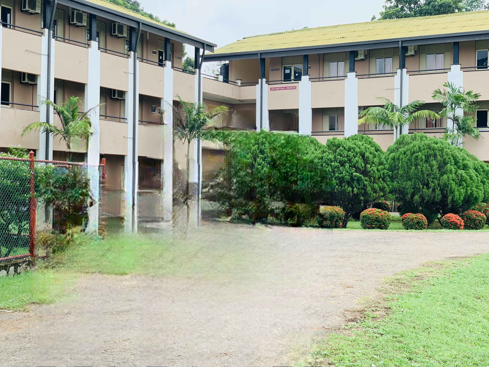
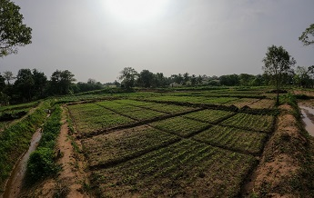

ABOUT THE FACULTY
On the recommendation of the committee on affiliated University colleges (1994) nine Affiliated
University colleges spread out in various provinces of the country were merged to form two National
Universities, the Rajarata and Sabaragamuwa University of Sri Lanka in 1996. The Affiliated
University College of the North Western province which consisted of two academic sections namely;
Home science and Nutrition and Agriculture, originally affiliated to the University of Kelaniya
and Peradeniya respectively, was merged from the Wayamba Campus of the Rajarata University in
terms of the provisions of section 18 and 47(1) of the University act. No 16 of 1978 and campus
board ordinance NO: 3 of 1995.

HISTORY OF THE FACULTY
Two faculties were set up from the Wayamba Campus namely, the faculty of Agricultural Science
and the faculty of Applied Sciences, each with three departments of study. The Faculty of
Agricultural Sciences constituted the Department of Plantation Management, Horticultural
Sciences, and Food Technology and Agricultural Engineering. A three-year general degree in
Agricultural Science was offered.
Later in 1999, a committee was appointed to made recommendations to upgrade the Wayamba Campus
to a fully-fledged university. Based on the recommendations of this committee the Wayamba
University was established in August 1999. With that faculty of Agricultural Sciences taken
over to the Wayamba University in 1999 and Rajarata University looses its Agriculture Faculty.
In year 2001 a new Agriculture Faculty of the Rajarata University was incepted at Puliyankulama
closes to ancient Anuradhapura and about ten kilometers away from Mihintale where administration
building complex and other sister faculties were located. It was started at a renovated paddy
store complex where faculty of Social Sciences and Humanities was located earlier. From the
beginning there were three departments namely,